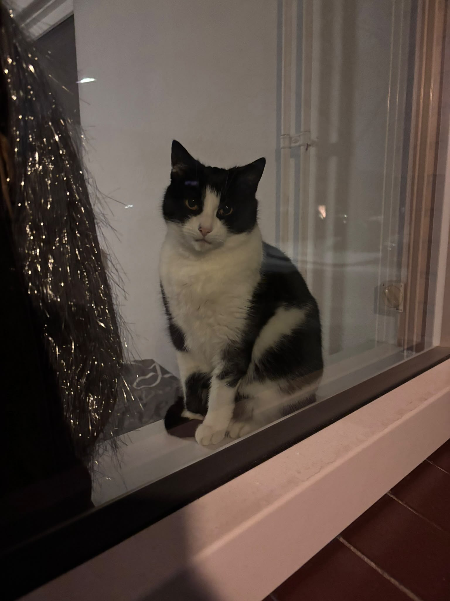
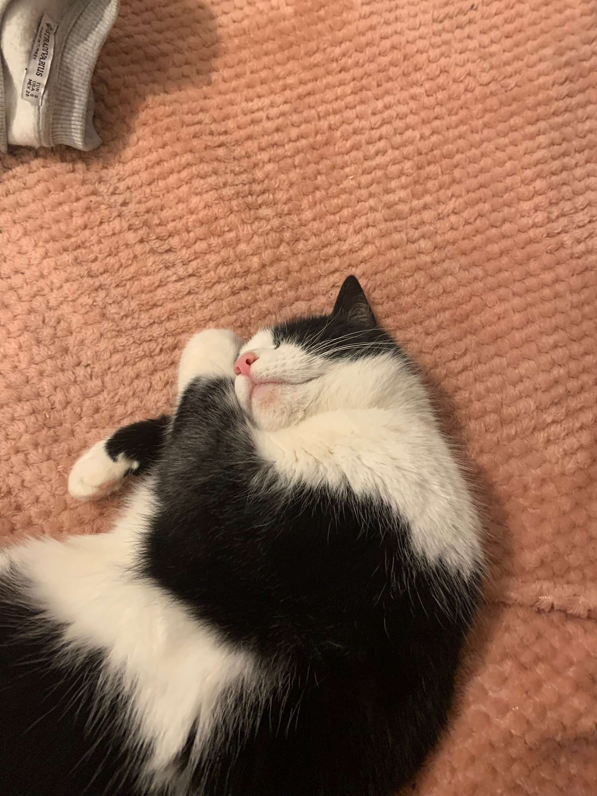
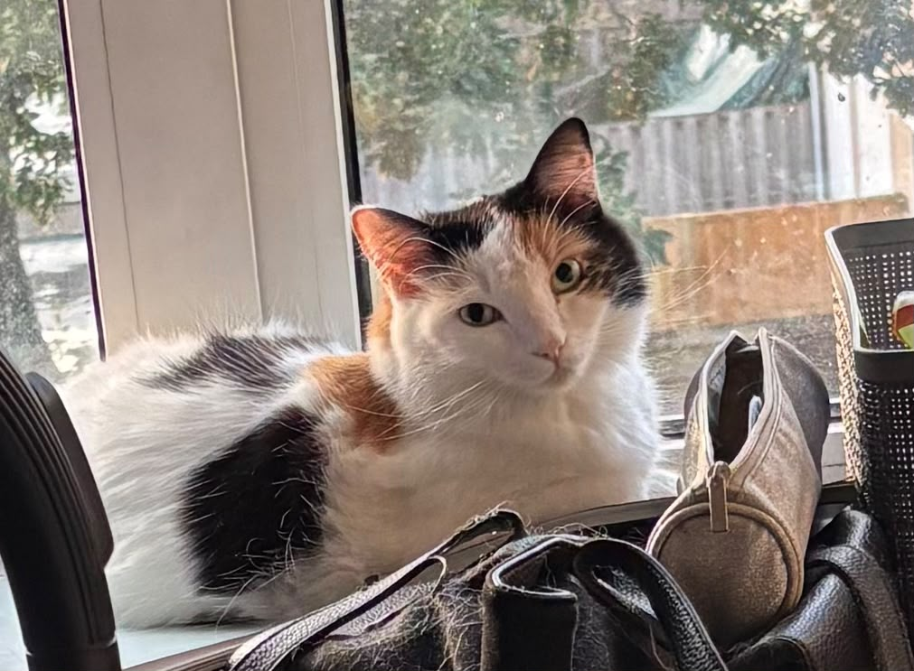
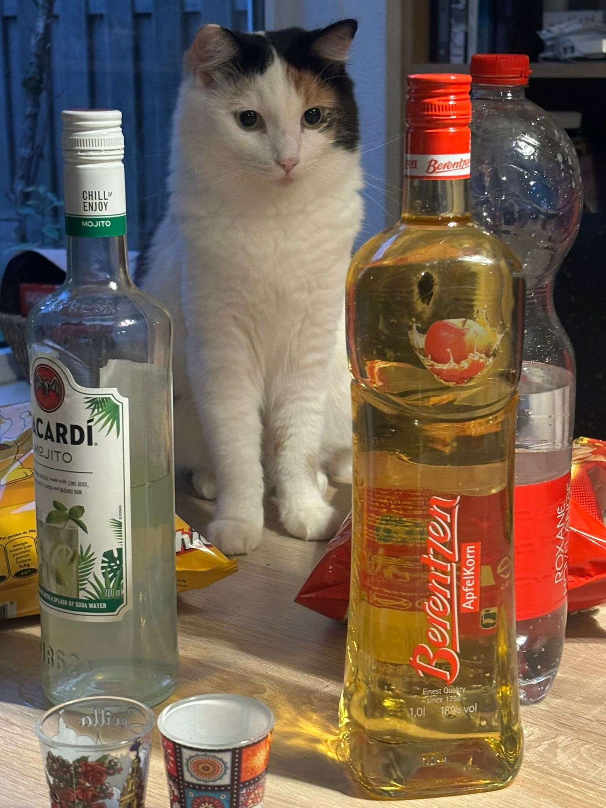
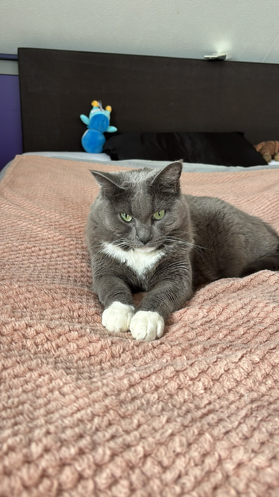
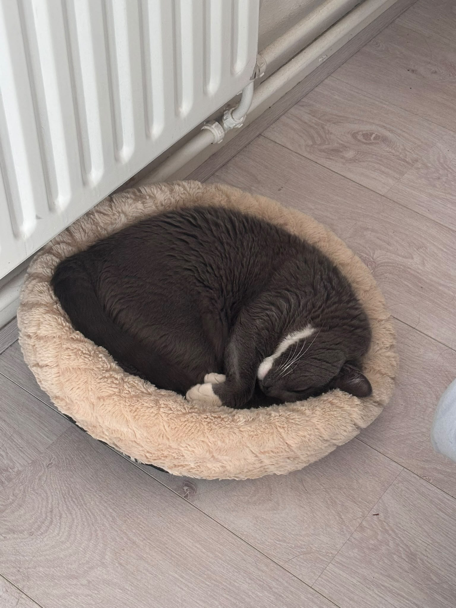
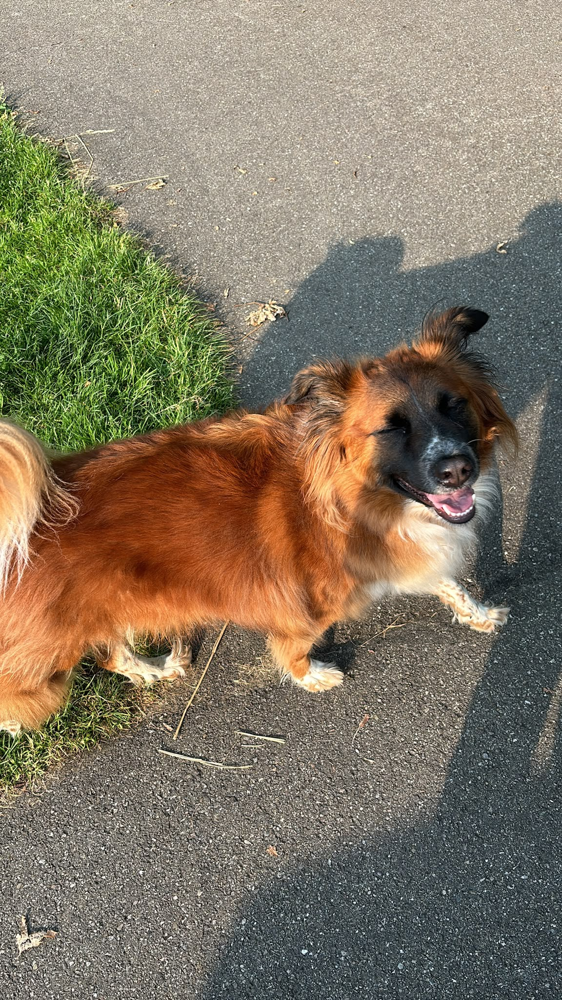
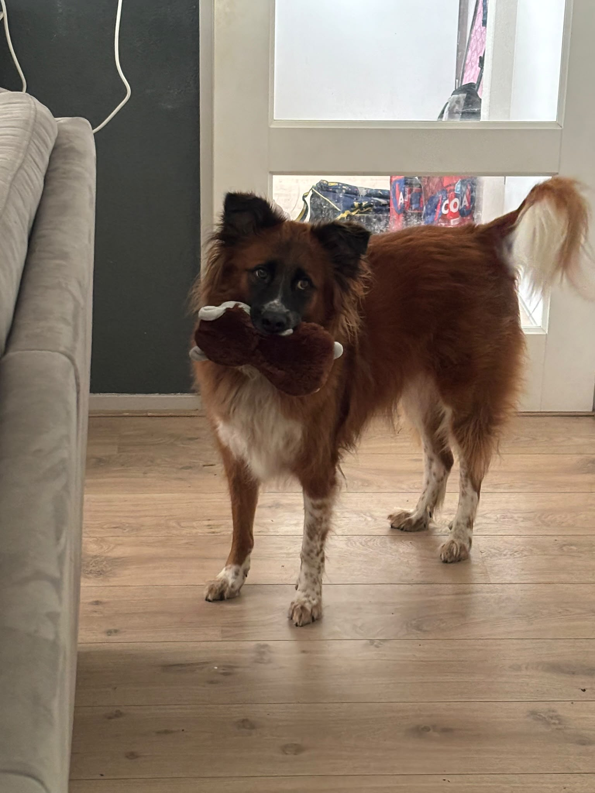

Mijn naam is Ryan van den Broek, wat je misschien al had kunnen gokken, ik ben 19 jaar in 2026. Ik leef in Nederland en heb bijna altijd in dezelfde stad geleeft.
Ik zou zeggen altijd, maar ik was eens gevestigd in Breda voor een opleiding in Accountancy.
Die opleiding leek niet voor mij te zijn, dus eigenlijk was ICT mijn tweede keuze.
Terwijl er nog overblijvende interesse is voor Accountancy, heb ik besloten dat het niet voor mij was.
Gamen is mijn primaire hobby geweest voor langer dan ik kan herinneren.
Games spelen is hoe ik ook ICT heb ontdekt en waar een groot deel van mijn ervaring op het internet van afstamt.
Ik heb ook een aantal huisdieren thuis, we hebben drie katten en een hond.
Wel moet ik mijn liefde voor katten dikdrukken
Hieronder zie je mijn favoriete dieren op volgorde.







